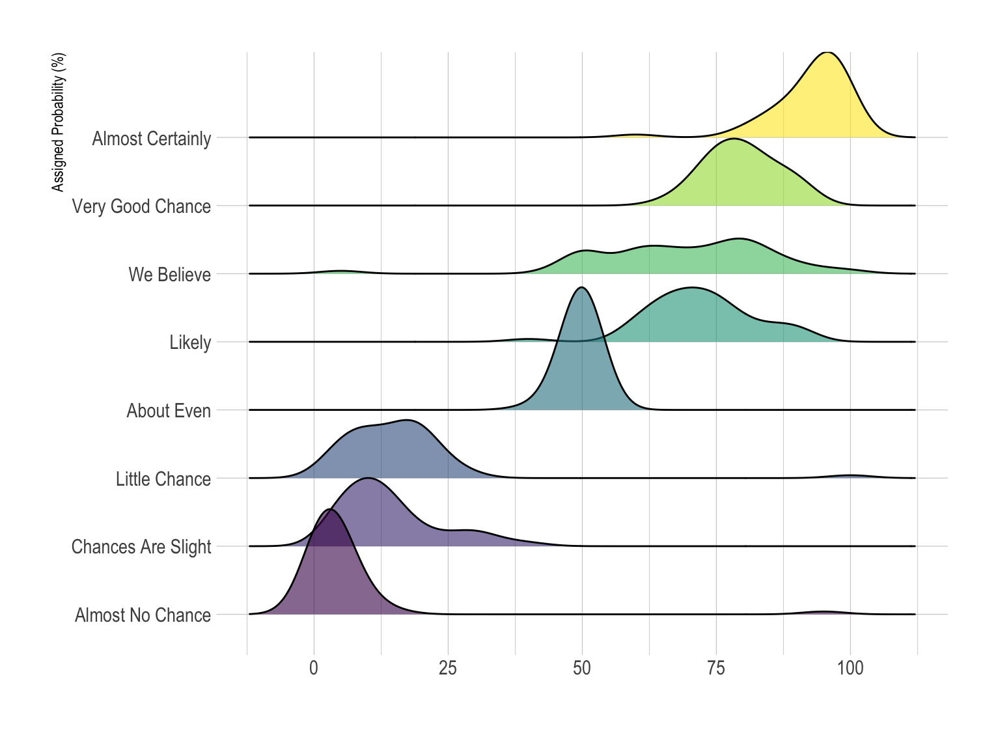
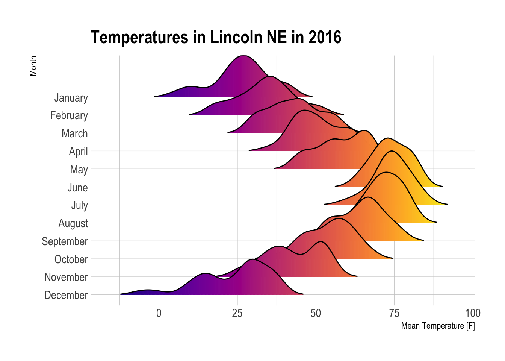

Ridgeline plot
definition - mistake - related - code
A Ridgeline plot (sometimes called Joyplot) shows the distribution of a numeric value for several groups. Distribution can be represented using histograms or density plots, all aligned to the same horizontal scale and presented with a slight overlap.
Here is an example showing how people perceive probability. On the /r/samplesize thread of reddit, questions like What probability would you assign to the phrase “Highly likely” were asked. Answers between 0 and 100 were recorded, and here is the distribution for each question:
# Libraries
library(tidyverse)
library(hrbrthemes)
library(viridis)
# Load dataset from github
data <- read.table("https://raw.githubusercontent.com/zonination/perceptions/master/probly.csv", header=TRUE, sep=",")
data <- data %>%
gather(key="text", value="value") %>%
mutate(text = gsub("\\.", " ",text)) %>%
mutate(value = round(as.numeric(value),0)) %>%
filter(text %in% c("Almost Certainly","Very Good Chance","We Believe","Likely","About Even", "Little Chance", "Chances Are Slight", "Almost No Chance"))
library(ggridges)
data %>%
mutate(text = fct_reorder(text, value)) %>%
ggplot( aes(y=text, x=value, fill=text)) +
geom_density_ridges(alpha=0.6, bandwidth=4) +
scale_fill_viridis(discrete=TRUE) +
scale_color_viridis(discrete=TRUE) +
theme_ipsum() +
theme(
legend.position="none",
panel.spacing = unit(0.1, "lines"),
strip.text.x = element_text(size = 8)
) +
xlab("") +
ylab("Assigned Probability (%)")
Disclaimer: This idea originally comes from a publication of the CIA which resulted in this figure. Then, Zoni Nation cleaned the reddit dataset and built graphics with R.
Ridgeline plots make sense when the number of group to represent is medium to high, and thus a classic window separation would take to much space. Indeed, the fact that groups overlap each other allows to use space more efficiently. If you have less than ~6 groups, dealing with other distribution plots is probably better.
It works well when there is a clear pattern in the result, like if there is an obvious ranking in groups. Otherwise group will tend to overlap each other, leading to a messy plot not providing any insight.
data %>%
mutate(text = fct_reorder(text, value)) %>%
ggplot( aes(y=text, x=value, fill=text)) +
geom_density_ridges(alpha=0.6, stat="binline", bins=20) +
scale_fill_viridis(discrete=TRUE) +
scale_color_viridis(discrete=TRUE) +
theme_ipsum() +
theme(
legend.position="none",
panel.spacing = unit(0.1, "lines"),
strip.text.x = element_text(size = 8)
) +
xlab("") +
ylab("Assigned Probability (%)")
ggplot(lincoln_weather, aes(x = `Mean Temperature [F]`, y = `Month`, fill = ..x..)) +
geom_density_ridges_gradient(scale = 3, rel_min_height = 0.01) +
scale_fill_viridis(name = "Temp. [F]", option = "C") +
labs(title = 'Temperatures in Lincoln NE in 2016') +
theme_ipsum() +
theme(
legend.position="none",
panel.spacing = unit(0.1, "lines"),
strip.text.x = element_text(size = 8)
) 
clear pattern to discover since it hides a part of the data where the overlap takes place.The R and Python graph galleries are 2 websites providing hundreds of chart example, always providing the reproducible code. Click the button below to see how to build the chart you need with your favorite programing language.
Any thoughts on this? Found any mistake? Disagree? Please drop me a word on twitter or in the comment section below:
A work by Yan Holtz for data-to-viz.com


{kind=link}